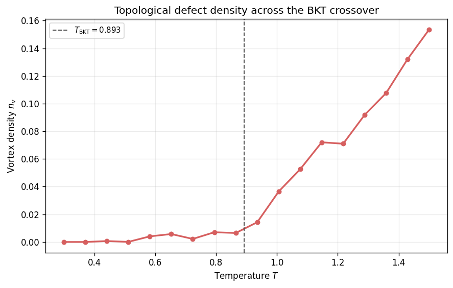
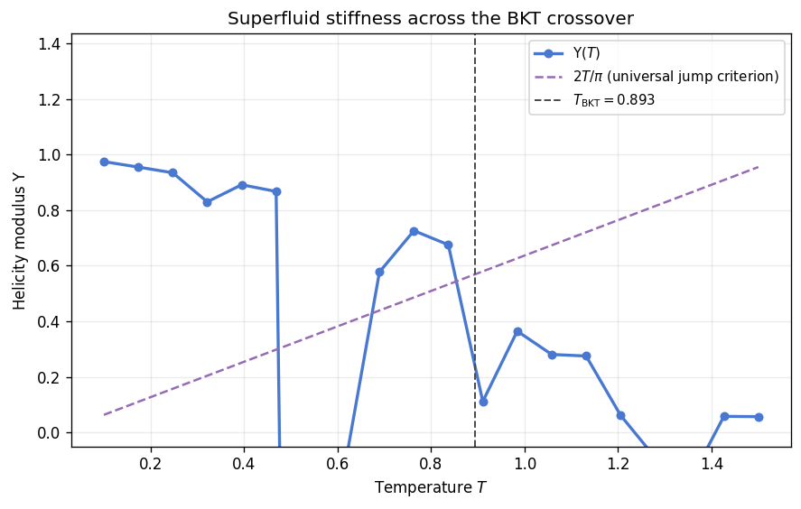
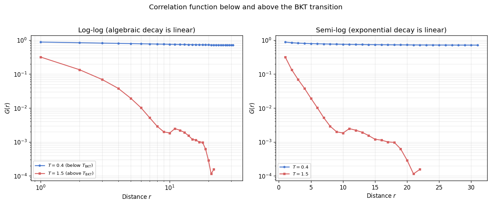

BKT Transition: Vortices, Helicity, and Correlations
The Berezinskii-Kosterlitz-Thouless (BKT) transition in the 2D XY model is not driven by symmetry breaking but by the unbinding of topological defects: vortex-antivortex pairs. Below \(T_{\mathrm{BKT}} \approx 0.893\) vortices and antivortices remain bound into dipole pairs that contribute only weakly to thermodynamic fluctuations. Above \(T_{\mathrm{BKT}}\) these pairs dissociate into free vortices, destroying the algebraic quasi-long-range order and introducing a finite correlation length [1] [2].
This notebook examines three complementary signatures of the BKT transition:
Vortex density \(n_v(T)\): the fraction of plaquettes carrying nonzero winding number, which rises sharply near \(T_{\mathrm{BKT}}\) as bound pairs proliferate and eventually unbind.
Helicity modulus \(\Upsilon(T)\): the superfluid stiffness, which exhibits a universal discontinuous jump \(\Upsilon(T_{\mathrm{BKT}}^{-}) = 2T_{\mathrm{BKT}}/\pi\) at the transition, proportional to the density of the superfluid component in the dual Coulomb-gas picture [2].
Correlation function \(G(r)\): algebraic decay \(G(r) \sim r^{-\eta(T)}\) with a continuously varying exponent below \(T_{\mathrm{BKT}}\), switching to exponential decay \(G(r) \sim e^{-r/\xi}\) above the transition [1].
Each section loads precomputed data from results/xy/ when available and falls back to a lightweight inline computation otherwise.
[1]:
from __future__ import annotations
from pathlib import Path
import matplotlib.pyplot as plt
import numpy as np
from models.xy_model import XYSimulation
from utils.equilibration import convergence_equilibrate
from utils.observables import get_averaged_correlation
def _find_repo_root() -> Path:
cwd = Path.cwd().resolve()
for candidate in (cwd, *cwd.parents):
if (candidate / 'pyproject.toml').exists() and (candidate / 'results').exists():
return candidate
return cwd
REPO_ROOT = _find_repo_root()
T_BKT = 0.893
CACHE_DIR = REPO_ROOT / 'results' / 'xy'
PALETTE = {
'vortex': '#D65F5F',
'helicity': '#4878CF',
'corr_low': '#4878CF',
'corr_high': '#D65F5F',
'jump_line': '#956CB4',
}
plt.rcParams['figure.dpi'] = 120
print(f'T_BKT (theoretical) = {T_BKT}')
print(f'Repository root: {REPO_ROOT}')
T_BKT (theoretical) = 0.893
Repository root: /workspaces/vibespin
Part I: Vortex Density
Data
The vortex density is the fraction of lattice plaquettes that carry a nonzero winding number. In the ground state this fraction is zero. As \(T\) increases, thermally generated vortex-antivortex pairs appear at a rate that grows rapidly near \(T_{\mathrm{BKT}}\). The cached data comes from scripts/xy/bkt_transition.py; the fallback sweeps a \(32 \times 32\) lattice with short equilibration and measurement.
[2]:
vortex_cache = CACHE_DIR / 'bkt_transition.npz'
vortex_min_points = 8
def _compute_vortex_sweep(
*,
size: int = 32,
n_temps: int = 18,
meas_steps: int = 80,
eq_probe: int = 200,
eq_max: int = 8_000,
) -> tuple[np.ndarray, np.ndarray]:
temps = np.linspace(0.3, 1.5, n_temps)
densities = np.empty_like(temps)
for idx, t in enumerate(temps):
sim_r = XYSimulation(size=size, temp=float(t), update='checkerboard', init_state='random', seed=100 + idx)
sim_o = XYSimulation(size=size, temp=float(t), update='checkerboard', init_state='ordered', seed=100 + idx)
convergence_equilibrate(sim_r, sim_o, chunk_size=eq_probe, max_steps=eq_max)
total = 0.0
for _ in range(meas_steps):
sim_r.step()
total += sim_r._get_vortex_density()
densities[idx] = total / meas_steps
return temps, densities
vortex_loaded = False
if vortex_cache.exists():
d = np.load(vortex_cache)
if 'temperatures' in d.files and 'vortex_densities' in d.files and d['temperatures'].size >= vortex_min_points:
vortex_temps = np.asarray(d['temperatures'], dtype=float)
vortex_densities = np.asarray(d['vortex_densities'], dtype=float)
vortex_source = f'Loaded {vortex_temps.size} points from cache ({vortex_cache.name})'
vortex_loaded = True
if not vortex_loaded:
vortex_temps, vortex_densities = _compute_vortex_sweep()
vortex_source = f'Computed fallback vortex sweep ({vortex_temps.size} points, L=32)'
print(vortex_source)
convergence_equilibrate: detected quasi-steady stuck state before max_steps=8000; stopping early without convergence.
convergence_equilibrate: detected quasi-steady stuck state before max_steps=8000; stopping early without convergence.
convergence_equilibrate: detected quasi-steady stuck state before max_steps=8000; stopping early without convergence.
convergence_equilibrate: detected quasi-steady stuck state before max_steps=8000; stopping early without convergence.
convergence_equilibrate: detected quasi-steady stuck state before max_steps=8000; stopping early without convergence.
convergence_equilibrate: detected quasi-steady stuck state before max_steps=8000; stopping early without convergence.
convergence_equilibrate: detected quasi-steady stuck state before max_steps=8000; stopping early without convergence.
convergence_equilibrate: detected quasi-steady stuck state before max_steps=8000; stopping early without convergence.
convergence_equilibrate: detected quasi-steady stuck state before max_steps=8000; stopping early without convergence.
convergence_equilibrate: detected quasi-steady stuck state before max_steps=8000; stopping early without convergence.
convergence_equilibrate: detected quasi-steady stuck state before max_steps=8000; stopping early without convergence.
convergence_equilibrate: detected quasi-steady stuck state before max_steps=8000; stopping early without convergence.
Computed fallback vortex sweep (18 points, L=32)
Vortex Density vs Temperature
The vortex density curve rises gently at low temperature as tightly bound pairs form, then sharpens near \(T_{\mathrm{BKT}}\) as the binding energy vanishes and free vortices proliferate. The dashed vertical line marks the theoretical \(T_{\mathrm{BKT}} \approx 0.893\).
[3]:
fig, ax = plt.subplots(figsize=(7.5, 4.8))
ax.plot(vortex_temps, vortex_densities, 'o-', color=PALETTE['vortex'], lw=2, ms=5)
ax.axvline(T_BKT, color='0.3', ls='--', lw=1.2, label=rf'$T_{{\mathrm{{BKT}}}} = {T_BKT}$')
ax.set_xlabel('Temperature $T$')
ax.set_ylabel('Vortex density $n_v$')
ax.set_title('Topological defect density across the BKT crossover')
ax.grid(alpha=0.25)
ax.legend(fontsize=9)
fig.tight_layout()
plt.show()

Part II: Helicity Modulus
Data
The helicity modulus (superfluid stiffness) \(\Upsilon\) measures the free-energy cost of imposing a twist across the lattice boundary. It is computed from the fluctuations of the spin-angle current:
where \(C = \sum_{\langle i,j \rangle_x} \cos(\theta_i - \theta_j)\) and \(S = \sum_{\langle i,j \rangle_x} \sin(\theta_i - \theta_j)\) are summed over nearest-neighbor bonds in the \(x\)-direction.
The BKT theory predicts a universal jump: \(\Upsilon(T_{\mathrm{BKT}}^-) = 2T_{\mathrm{BKT}}/\pi\) with \(\Upsilon = 0\) above the transition (in the thermodynamic limit). On finite lattices the jump is rounded into a smooth crossover [2] [3].
[4]:
helicity_cache = CACHE_DIR / 'helicity_modulus.npz'
helicity_min_points = 8
def _compute_helicity_sweep(
*,
size: int = 32,
n_temps: int = 20,
meas_steps: int = 2_000,
eq_probe: int = 200,
eq_max: int = 8_000,
) -> tuple[np.ndarray, np.ndarray]:
temps = np.linspace(0.1, 1.5, n_temps)
helicity = np.empty_like(temps)
for idx, t in enumerate(temps):
sim_r = XYSimulation(size=size, temp=float(t), update='checkerboard', init_state='random', seed=200 + idx)
sim_o = XYSimulation(size=size, temp=float(t), update='checkerboard', init_state='ordered', seed=200 + idx)
convergence_equilibrate(sim_r, sim_o, chunk_size=eq_probe, max_steps=eq_max)
cos_sums = np.empty(meas_steps)
sin_sums = np.empty(meas_steps)
for k in range(meas_steps):
sim_r.step()
cos_sums[k], sin_sums[k] = sim_r._get_helicity_data()
avg_cos = np.mean(cos_sums)
avg_sq_sin = np.mean(sin_sums ** 2)
helicity[idx] = (avg_cos - (1.0 / float(t)) * avg_sq_sin) / (size ** 2)
return temps, helicity
helicity_loaded = False
if helicity_cache.exists():
d = np.load(helicity_cache)
if 'temperatures' in d.files and 'helicity_modulus' in d.files and d['temperatures'].size >= helicity_min_points:
helicity_temps = np.asarray(d['temperatures'], dtype=float)
helicity_vals = np.asarray(d['helicity_modulus'], dtype=float)
helicity_source = f'Loaded {helicity_temps.size} points from cache ({helicity_cache.name})'
helicity_loaded = True
if not helicity_loaded:
helicity_temps, helicity_vals = _compute_helicity_sweep()
helicity_source = f'Computed fallback helicity sweep ({helicity_temps.size} points, L=32)'
print(helicity_source)
convergence_equilibrate: detected quasi-steady stuck state before max_steps=8000; stopping early without convergence.
convergence_equilibrate: detected quasi-steady stuck state before max_steps=8000; stopping early without convergence.
convergence_equilibrate: detected quasi-steady stuck state before max_steps=8000; stopping early without convergence.
convergence_equilibrate: detected quasi-steady stuck state before max_steps=8000; stopping early without convergence.
convergence_equilibrate: detected quasi-steady stuck state before max_steps=8000; stopping early without convergence.
convergence_equilibrate: detected quasi-steady stuck state before max_steps=8000; stopping early without convergence.
convergence_equilibrate: detected quasi-steady stuck state before max_steps=8000; stopping early without convergence.
convergence_equilibrate: detected quasi-steady stuck state before max_steps=8000; stopping early without convergence.
convergence_equilibrate: detected quasi-steady stuck state before max_steps=8000; stopping early without convergence.
convergence_equilibrate: detected quasi-steady stuck state before max_steps=8000; stopping early without convergence.
convergence_equilibrate: detected quasi-steady stuck state before max_steps=8000; stopping early without convergence.
convergence_equilibrate: detected quasi-steady stuck state before max_steps=8000; stopping early without convergence.
convergence_equilibrate: detected quasi-steady stuck state before max_steps=8000; stopping early without convergence.
Computed fallback helicity sweep (20 points, L=32)
Helicity Modulus vs Temperature
The helicity curve approaches a constant (the spin-wave stiffness) at low temperature, then drops toward zero near \(T_{\mathrm{BKT}}\). The dashed purple line shows the Nelson-Kosterlitz universal-jump criterion \(\Upsilon = 2T/\pi\); the intersection with the data curve locates \(T_{\mathrm{BKT}}\) on the finite lattice [2].
[5]:
fig, ax = plt.subplots(figsize=(7.5, 4.8))
ax.plot(helicity_temps, helicity_vals, 'o-', color=PALETTE['helicity'], lw=2, ms=5, label=r'$\Upsilon(T)$')
jump_line_t = np.linspace(helicity_temps.min(), helicity_temps.max(), 100)
jump_line_y = 2.0 * jump_line_t / np.pi
ax.plot(jump_line_t, jump_line_y, '--', color=PALETTE['jump_line'], lw=1.5, label=r'$2T/\pi$ (universal jump criterion)')
ax.axvline(T_BKT, color='0.3', ls='--', lw=1.2, label=rf'$T_{{\mathrm{{BKT}}}} = {T_BKT}$')
ax.set_xlabel('Temperature $T$')
ax.set_ylabel(r'Helicity modulus $\Upsilon$')
ax.set_title('Superfluid stiffness across the BKT crossover')
ax.set_ylim(bottom=-0.05)
ax.grid(alpha=0.25)
ax.legend(fontsize=9)
fig.tight_layout()
plt.show()

Part III: Correlation Function
Data
The spin-spin correlation function \(G(r) = \langle \vec{s}_0 \cdot \vec{s}_r \rangle\) reveals the nature of order in each regime. Below \(T_{\mathrm{BKT}}\) the decay is algebraic: \(G(r) \sim r^{-\eta(T)}\) with \(\eta(T_{\mathrm{BKT}}) = 1/4\). Above \(T_{\mathrm{BKT}}\) the decay crosses over to exponential: \(G(r) \sim \exp(-r/\xi)\) with a finite correlation length \(\xi\) [1] [2]. The precomputed data comes from
scripts/xy/compare_correlations.py; the fallback uses get_averaged_correlation() on a \(40 \times 40\) lattice.
[6]:
corr_cache = CACHE_DIR / 'correlation_comparison.npz'
T_LOW = 0.4
T_HIGH = 1.5
def _compute_correlations(
*,
temp: float,
size: int = 40,
total_steps: int = 2_000,
sample_interval: int = 20,
eq_probe: int = 200,
eq_max: int = 6_000,
seed: int = 0,
) -> tuple[np.ndarray, np.ndarray]:
sim_r = XYSimulation(size=size, temp=temp, update='checkerboard', init_state='random', seed=seed)
sim_o = XYSimulation(size=size, temp=temp, update='checkerboard', init_state='ordered', seed=seed)
convergence_equilibrate(sim_r, sim_o, chunk_size=eq_probe, max_steps=eq_max)
r, G = get_averaged_correlation(
sim=sim_r,
total_steps=total_steps,
sample_interval=sample_interval,
)
return np.asarray(r, dtype=float), np.asarray(G, dtype=float)
corr_loaded = False
if corr_cache.exists():
d = np.load(corr_cache)
if all(k in d.files for k in ('r_low', 'G_low', 'r_high', 'G_high')):
r_low = np.asarray(d['r_low'], dtype=float)
G_low = np.asarray(d['G_low'], dtype=float)
r_high = np.asarray(d['r_high'], dtype=float)
G_high = np.asarray(d['G_high'], dtype=float)
T_LOW = float(d['T_low']) if 'T_low' in d.files else T_LOW
T_HIGH = float(d['T_high']) if 'T_high' in d.files else T_HIGH
corr_source = f'Loaded correlation data from cache ({corr_cache.name})'
corr_loaded = True
if not corr_loaded:
r_low, G_low = _compute_correlations(temp=T_LOW, seed=400)
r_high, G_high = _compute_correlations(temp=T_HIGH, seed=401)
corr_source = f'Computed fallback correlations (L=40)'
print(corr_source)
convergence_equilibrate: detected quasi-steady stuck state before max_steps=6000; stopping early without convergence.
Computed fallback correlations (L=40)
Correlation Functions on Log-Log and Semi-Log Scales
A log-log plot reveals algebraic decay as a straight line: the negative slope gives \(\eta(T)\). A semi-log plot makes exponential decay appear linear. Below \(T_{\mathrm{BKT}}\) the log-log curve is approximately straight (power-law). Above \(T_{\mathrm{BKT}}\) the semi-log plot linearizes (exponential).
[7]:
fig, axes = plt.subplots(1, 2, figsize=(12, 4.8))
mask_low = (r_low > 0) & (G_low > 0)
mask_high = (r_high > 0) & (G_high > 0)
# Log-log: algebraic regime
axes[0].loglog(r_low[mask_low], G_low[mask_low], 'o-', color=PALETTE['corr_low'], ms=3, lw=1.5,
label=rf'$T = {T_LOW}$ (below $T_{{\mathrm{{BKT}}}}$)')
axes[0].loglog(r_high[mask_high], G_high[mask_high], 's-', color=PALETTE['corr_high'], ms=3, lw=1.5,
label=rf'$T = {T_HIGH}$ (above $T_{{\mathrm{{BKT}}}}$)')
axes[0].set_xlabel('Distance $r$')
axes[0].set_ylabel('$G(r)$')
axes[0].set_title('Log-log (algebraic decay is linear)')
axes[0].grid(alpha=0.25, which='both')
axes[0].legend(fontsize=8)
# Semi-log: exponential regime
axes[1].semilogy(r_low[mask_low], G_low[mask_low], 'o-', color=PALETTE['corr_low'], ms=3, lw=1.5,
label=rf'$T = {T_LOW}$')
axes[1].semilogy(r_high[mask_high], G_high[mask_high], 's-', color=PALETTE['corr_high'], ms=3, lw=1.5,
label=rf'$T = {T_HIGH}$')
axes[1].set_xlabel('Distance $r$')
axes[1].set_ylabel('$G(r)$')
axes[1].set_title('Semi-log (exponential decay is linear)')
axes[1].grid(alpha=0.25, which='both')
axes[1].legend(fontsize=8)
fig.suptitle('Correlation function below and above the BKT transition', y=1.02)
fig.tight_layout()
plt.show()

Synthesis
The three observables jointly confirm the BKT mechanism. The vortex density curve shows the onset of topological defect proliferation near \(T_{\mathrm{BKT}}\). The helicity modulus tracks the vanishing of the superfluid stiffness, crossing the \(2T/\pi\) universal-jump line in the vicinity of the predicted transition temperature. The correlation function changes from algebraic to exponential decay across the same temperature region. Together these signatures distinguish the BKT transition from conventional order-disorder transitions: the correlation length diverges exponentially (rather than as a power law) from the high-temperature side, and the helicity modulus jumps discontinuously (rather than vanishing continuously) as the temperature decreases through \(T_{\mathrm{BKT}}\).
Bibliography
[1] V. L. Berezinskii, “Destruction of Long-range Order in One-dimensional and Two-dimensional Systems Possessing a Continuous Symmetry Group. II. Quantum Systems,” Soviet Physics JETP 34, 610 (1972). JETP link
[2] J. M. Kosterlitz and D. J. Thouless, “Ordering, metastability and phase transitions in two-dimensional systems,” Journal of Physics C 6, 1181 (1973). IoP Open Access
[3] D. R. Nelson and J. M. Kosterlitz, “Universal Jump in the Superfluid Density of Two-Dimensional Superfluids,” Physical Review Letters 39, 1201 (1977). APS